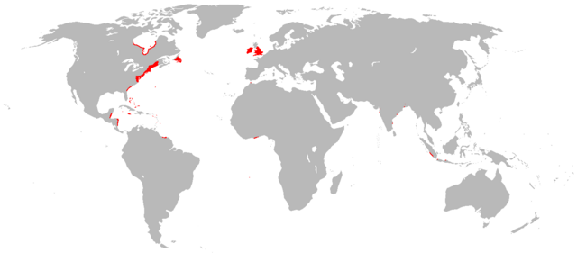
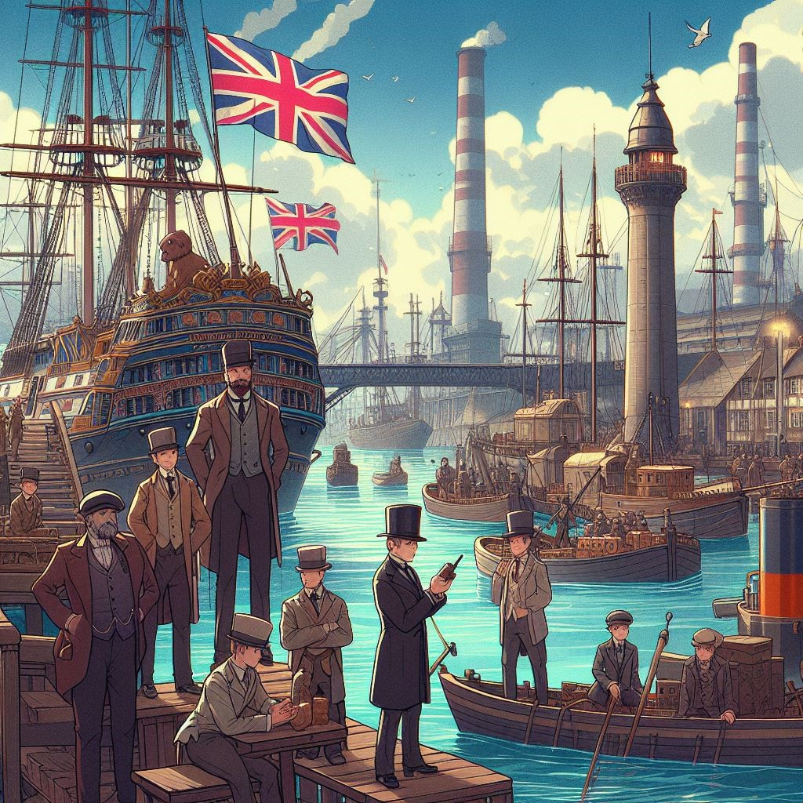

Indietro

Alessandro Pala
22-01-2024
Le colonie del Regno unito
La ricchezza dell’Inghilterra è legata anche ai commerci
L'Inghilterra era il paese dominante nel commercio mondiale nel XIX secolo grazie alle sue colonie oltreoceano. Queste colonie fornivano all'Inghilterra una vasta gamma di risorse naturali, tra cui materie prime, cibo e manodopera a basso costo. Questo permetteva all'Inghilterra di produrre beni a costi più bassi rispetto agli altri paesi, dandole un vantaggio competitivo nel commercio internazionale.
In particolare, le colonie inglesi in America del Nord, in India e nell'Africa fornivano all'Inghilterra le seguenti risorse:
Queste risorse permettevano all'Inghilterra di produrre una vasta gamma di beni, tra cui tessuti, prodotti alimentari, armi e manufatti. Questi beni venivano poi esportati in tutto il mondo, generando grandi profitti per l'Inghilterra.
L'Inghilterra era anche in grado di controllare le rotte marittime globali grazie alla sua potente Marina Militare. Questo permetteva all'Inghilterra di proteggere le sue navi mercantili e di impedire ad altri paesi di competere con essa nel commercio internazionale.
In sintesi, l'Inghilterra era il paese dominante nel commercio mondiale nel XIX secolo grazie alle seguenti fattori:
Questi fattori permisero all'Inghilterra di diventare la prima potenza industriale e commerciale del mondo.
